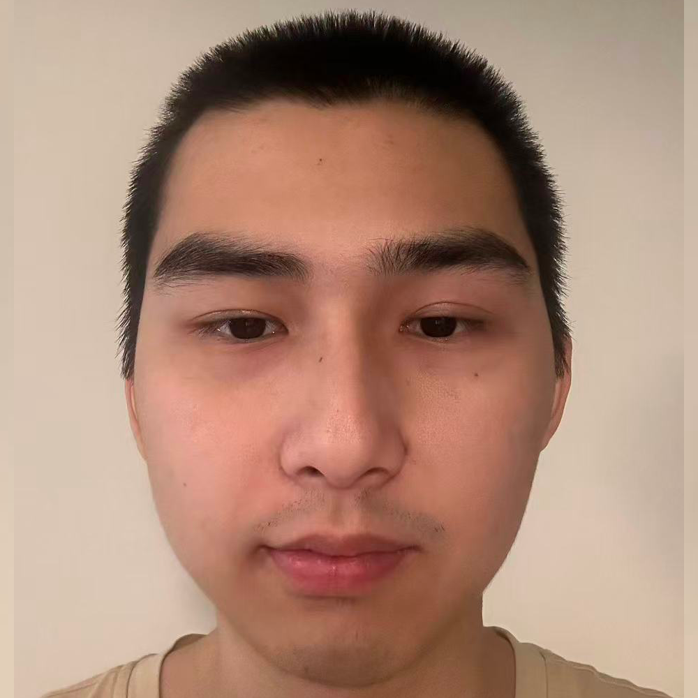
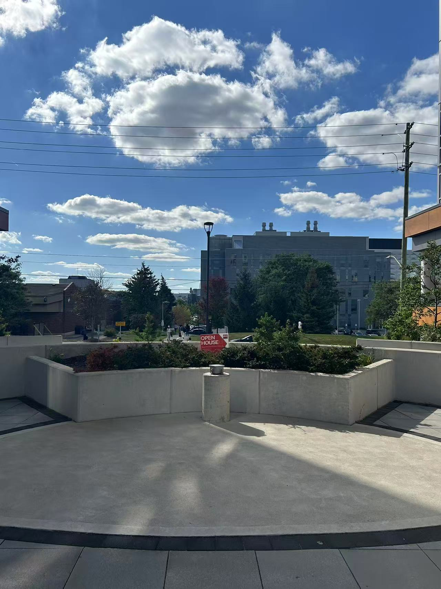
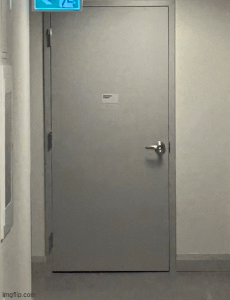
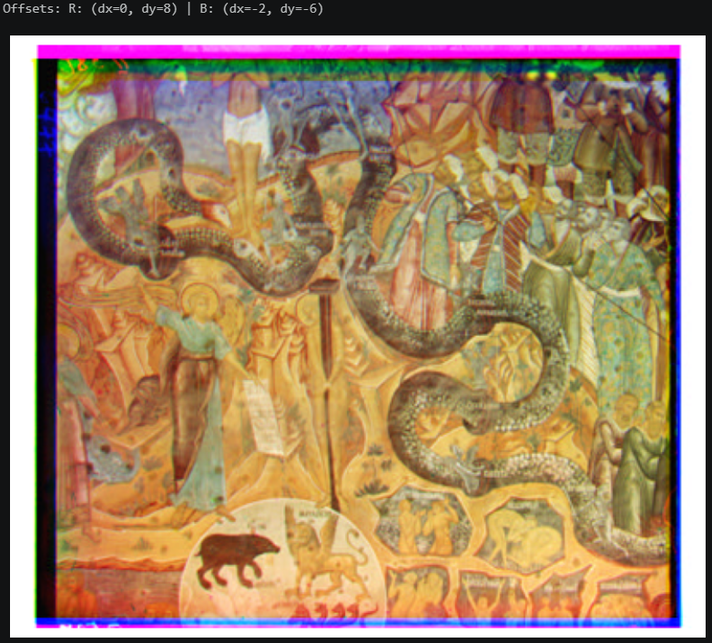
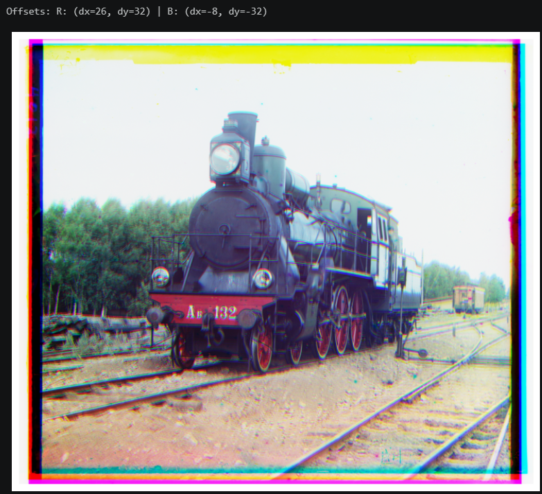
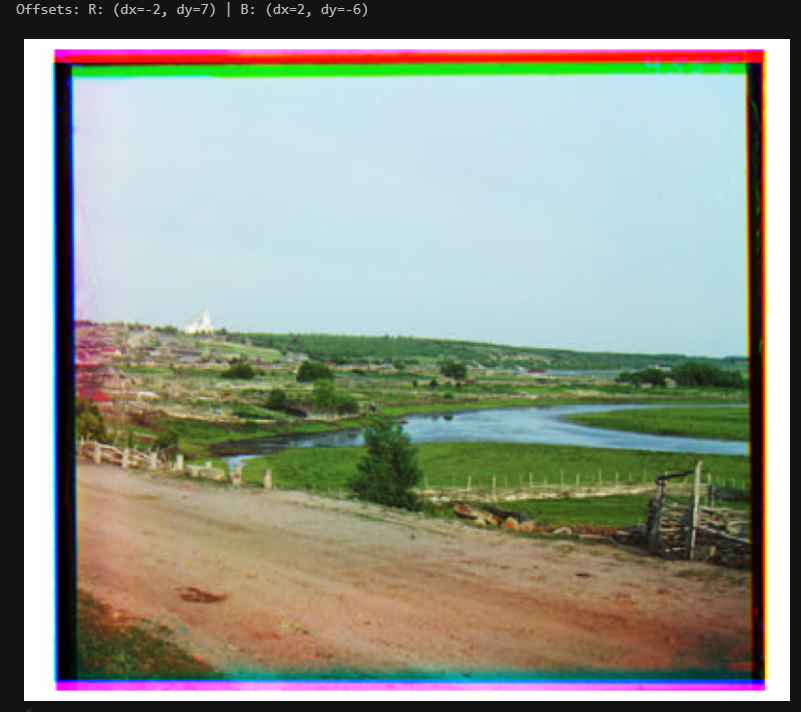

Shooting from different positions yields vastly different results. Even with magnification or zooming, the distortion caused by the difference in relative distances cannot be eliminated. Specifically, when the camera is too close, the distance gap between objects at different positions is accentuated; for instance, if objects A and B are 1m and 2m from the lens, moving the camera 10m further away changes their distances to approximately 11m and 12m. While the absolute difference remains similar, the ratio approaches 1, resulting in a relatively flattened image.


This effect is also used in cinematic visual effects; zooming allows the edges of the image to be stretched, thereby highlighting the central object.

To produce a color image with only digitized Prokudin-Gorskii glass plate images, we need to use NCC to aligin. However, since an exhaustive pixel-by-pixel comparison is required, the code takes a long time to execute with large images. To address this, we use an image pyramid to generate a downscaled version (half the original size); we use this smaller image for coarse localization and then switch to the original image for fine-tuning.
Since the input consists of a single file containing three image channels, cropping might leave white borders; to prevent edge artifacts from affecting the NCC calculation, I performed a slight crop to ensure that only the central, valid region is used for alignment.
After improvement, each images takes not longer than 2 minutes! As pyramids work, single-scale should also work.


